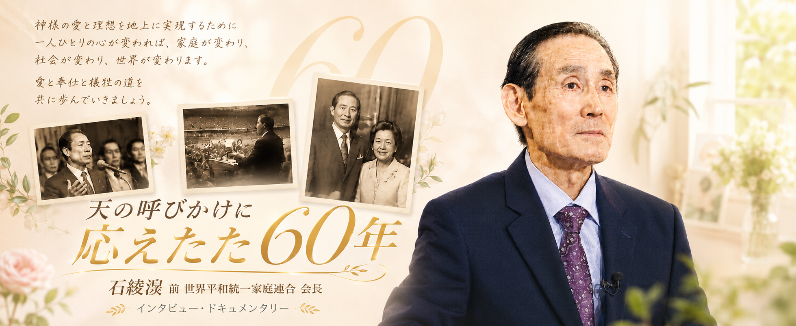
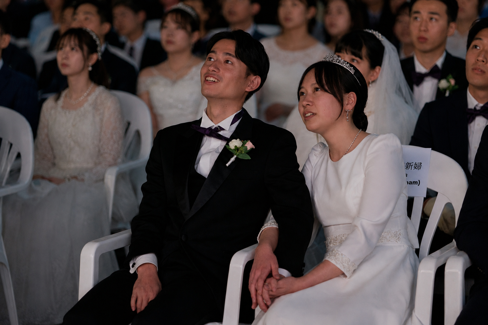
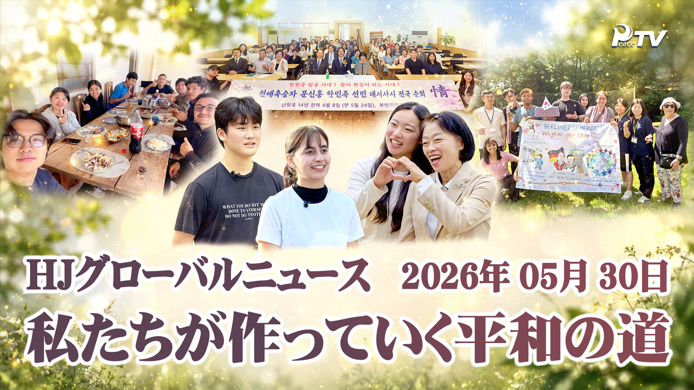
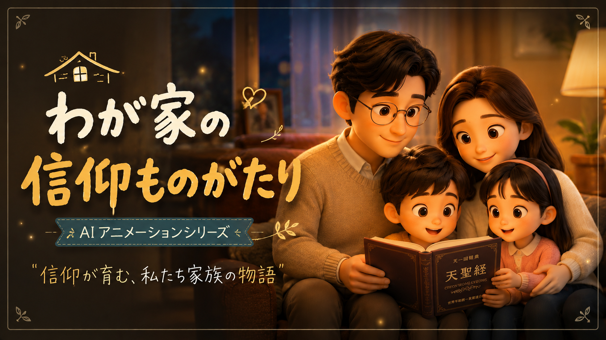
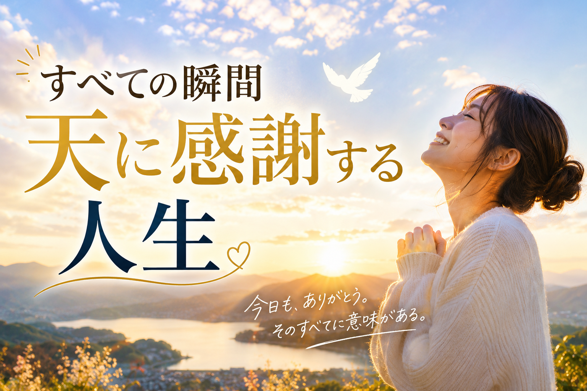
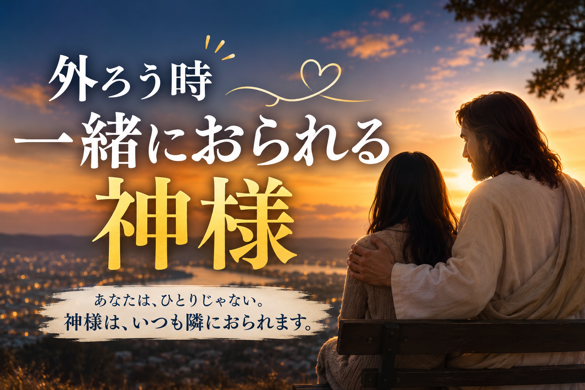
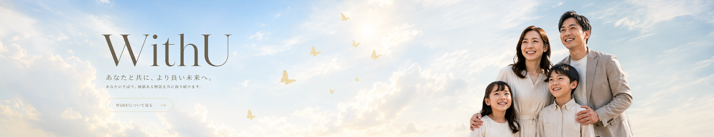

世界ニュース
2026 元旦祈祷会
2026.04.28




子どもたちの目線で信仰と愛を学ぶ、家族向けアニメシリーズです。祈りと感謝、家族の大切さを描いた物語で、親子でともに楽しめる温かなひとときをお届けします。

黙想毎日の小さな瞬間の中に感謝の理由を見つけ、天の父母様の愛を心に刻む黙想コンテンツです。

回復ひとりだと感じるときも、私たちのそばで見守ってくださる神を思い起こし、慰めと勇気を伝える映像です。
平凡な一日の中で働かれる神を見つけ、信仰を生活の中で実践できるよう導くコンテンツです。
毎朝WithUを開くのが習慣になりました。短い黙想映像が一本あるだけで、一日の始まりがすっと整うんです。家族と分かち合う話題も自然と増えました。
映像と記事で信仰に触れると、子どもたちにも自然と伝わっていきます。世代を越えて同じ言葉で語り合えることが、何よりの贈り物です。
